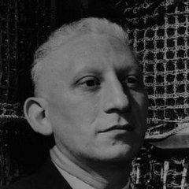

History

Timeline:
(April 1, 1922) Alan Jay Perlis is into Jewish family in in
Pittsburgh, Pennsylvania.
(1933) Perlis enroles in the public, and prestigious, Taylor
Allderdice High School.
(1939) Perlis enteres Carnegie Institute of Technology.
(December 20, 1942) Perlis graduates with honors in Chemistry
from the Carnegie Institute of Technology.
(December 22, 1942) Perlis signs up for the Aviation Cadet
Meteorology Program of the US Army Air Force.
(September 1943) Perlis becomes a 2nd lieutenant in the
meteorology services.
(September 1945) Perlis returns to civilian life and enrolls
in the California Institute of Technology for graduate study in
chemistry. Perlis quikly realizes that this is not his passion and
switches to the study of mathematics at the Massachusetts Institute
of Technology (MIT).
(1949-1950) Perlis carries out research on numerical analysis
methods, under the supervision of Philip Franklin at MIT, which
leads to the completion of his master thesis.
(1951) Perlis spends year in the Ballistic Research Laboratory
(BRL) at Aberdeen Proving Ground, Maryland, where he works on the
computation of ballistics tables.
(1952) Perlis joins the Statistical Laboratory at Purdue
University. At Purdue Perlis begins the research that leads him to
eminence. Perlis persuads Kossac (Activities leader) and the
university administrators to purchase the Datatron 205.
(1955) Perlis’ team begins the design of a “mathematical
language compiler” for it, later named the IT language (for Internal
Translator). IT was a “compiler" (a set of programs that
automatically translate programs written in a notation similar to
that of mathematics into machine code).
(1956) Perlis leaves Purdue University to become an associate
professor of mathematics and director of the computation centre at
the Carnegie Institute of Technology (Carnegie Mellon University).
At the Carnegie Institute of Technology, Perlis completes the first
version of IT on an IBM 650 computer. (IT was adopted by many
university computing installations as an alternative to Fortran,
which was only available for much larger and more expensive
computers. At the same time, IT hinted at a way towards a universal
language.)
(May 1958) Under Perlis' leadership, a small group of ACM
representatives meet in Zurich with the German-Swiss group resulting
in the definition of the International Algorithmic Language (IAL)
and its publication as report in the Communications of the ACM. (IAL
was renamed ALGOL and was widely discussed in forums like
Communications of the ACM, resulting in a new definition called
ALGOL-60)
(1971) Perlis moves to Yale University as the Eugene Higgins
Professor of Computer Science in their new Computer Science
Department.
(February 7, 1990) Alan Jay Perlis dies.